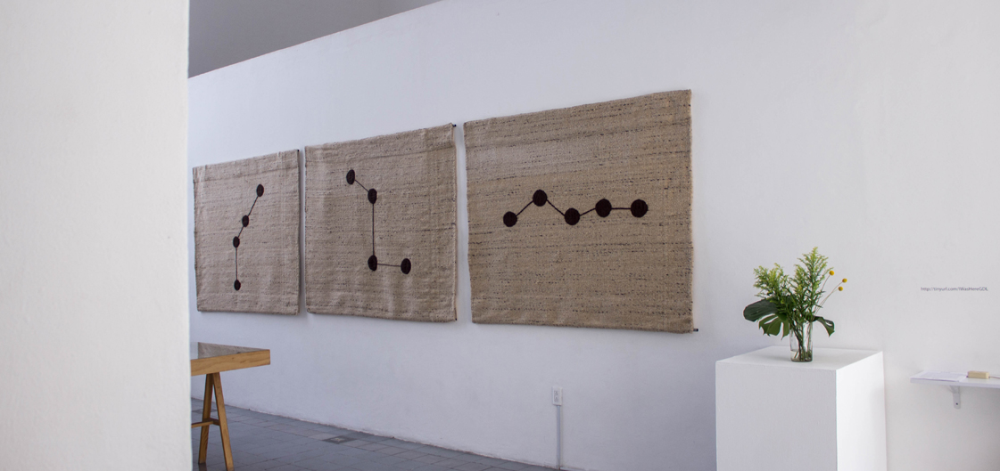
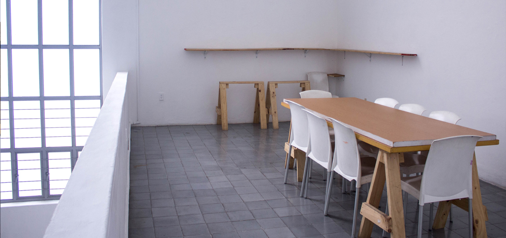
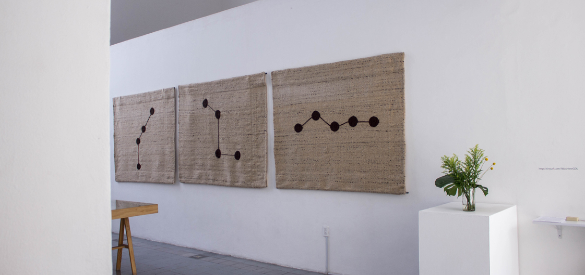
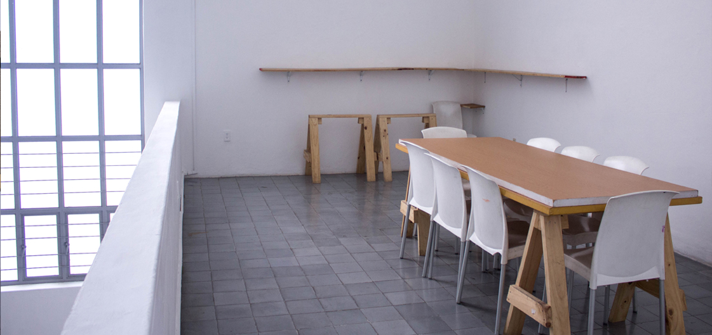

↳ABOUT
THE PROJECT
 



PAOS is a residency and educational program focused on artistic production and exchanges in Guadalajara, Mexico developed in different contemporary artistic forms and their creative processes. PAOS promotes knowledge, critical thinking and the encounter between creatives and publics through our two main programs: Educational Program and Residency Program (local and international).
↳ABOUT
THE HOUSE
MUSEO TALLER
JOSÉ CLEMENTE OROZCO
Museo Taller Jose Clemente Orozco harbors PAOS GDL,
this house was the last artist’ studio. Built by the
engineer Edmundo Ponce Adame accordance to Orozco’s
specifications and needs, the house was finished in
1949 and is where he planned to live his last years.
This workshop was the second that Orozco had in Guadalajara.
The first one, located in Lopez Cotilla #814 was where he
lived while he made the murals for the Paraninfo of the
Guadalajara University and Hospicio Cabañas. He sold it
before acquiring the ground in Aurelio Aceves. Museo
Taller José Clemente Orozco was inaugurated in 1951 as
the first museum dedicated to an artist in Mexico.
Clemente Orozco Valladares, painter’s son, mentions
that his father designed his two studios in Guadalajara
and in Mexico City. In the book José Clemente Orozco,
Alma Reed mentions that “the artist put in service his
early architecture early practices that he learned during
his 3 years in the Agricultura de San Jacinto school, when
planning and designing the three floor building”.
Even though
the original design was made by José Clemente Orozco, the
building was modified with the intervention of the civil
engineer Edmundo Ponce Adame, who did all the calculation
and the supervision of the architectonic work. The final
design was, a mixture of Orozco’s styles and Ponce Adame’s;
respecting the construction and the engineer said: “The design
was mine, but following the instructions of the master, he said:
I want a living room here. We adjusted to the possibilities and
the final design resulted, the most important part is the proper
studio, José Clemente didn’t give much importance to the rest and
he set the dimensions, he said: I want it to have 9.50 free meters
high” It isn’t certain the exact date when José Clemente Orozco
started to inhabit the Casa Taller, but by late may 1949, before
it was finished, he already lived in it in an itinerant way, he
came and went from Mexico City to Guadalajara continuously.
Museo Taller The creation of Museo Taller was accomplished
due to the inspiration and wishes of Margarita Valladares,
Orozco’s widow, who understood the importance of the
composition of her husband’s work. She took care of managing
all the needs of the Instituto Nacional de Bellas Artes and
Jalisco’s state government for the enrichment of the mexican
patrimony spreading the pictoric work and the important features
of his personal life.